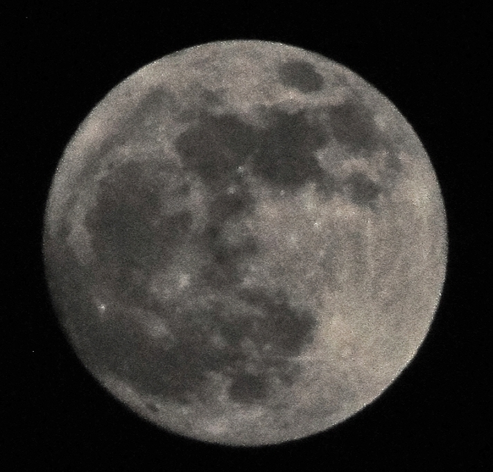

If you want to connect, query or work along a new thing, contact me via my socials or email, and a look of my resume.
and ....
Just a guy delved into cs, math and ml stuff. First principles thinker and a learner who prioritize understanding.
Exploring and working on CNN, machine learning(cs229) and some projects as of now.